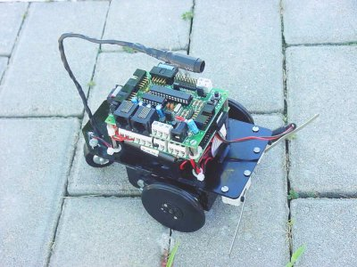

La robótica se aprende haciendo robots. Pero para construir robots hay que saber… Así que… ¿Cómo puede alguien iniciarse en el mundo de la robótica? Así es como nacieron los talleres de robótica.
El Skybot es el robot “hola mundo” que utilizamos en los talleres para que la gente se inicie en el mundo de la robótica. En ellos los asistentes pierden el miedo al “cacharreo”: Tienen que soldar, empalmar cables, montar una estructura mecánica, bregar con los problemas que aparecen… La aplicación más fácil a desarrollar es el clásico seguidor de líneas:

Sí, ya lo sé, es algo muy sencillo para tí, pero estos talleres están pensados para la gente que nunca ha construido ni programado un robot. El seguimiento de líneas es perfecto para enseñar. Sólo hay que ver la cara que pone la gente cuando mueve el robot por primera vez… 🙂
El Skybot es un robot libre. Significa que toda la información está disponible: los planos de las piezas, el hardware, el firmware, el software… Significa que una vez que lo has construido y programado en uno de los talleres, podrás profundizar en lo que más te interese: Podrás mejorar la estructura mecánica, por ejemplo haciéndola de aluminio. Podrás cambiar los motores por otros más potentes. Podrás estudiar la electrónica y hacerte tu propia placa a la medida. Podrás estudiar cómo están hechos todos los programas…

¿Sabes que en realidad el robot Flatbot es un Skybot? Sí, es un Skybot al que se le ha sustituido el chásis y los motores por otros. Ya está. Tiene la misma electrónica y se usa el mismo software. Ahora ponle un portátil encima… 🙂
Esa es la ventaja de empezar con un robot aparentemente simple como Skybot.
Si aprendes bien cómo funciona, el límite sólo estará en tu imaginación.
Aprovecho para poner el último vídeo del skybot controlado con un
Tarri-wheel:

¡Nos vemos en los talleres de robótica de la Campus Party2008!